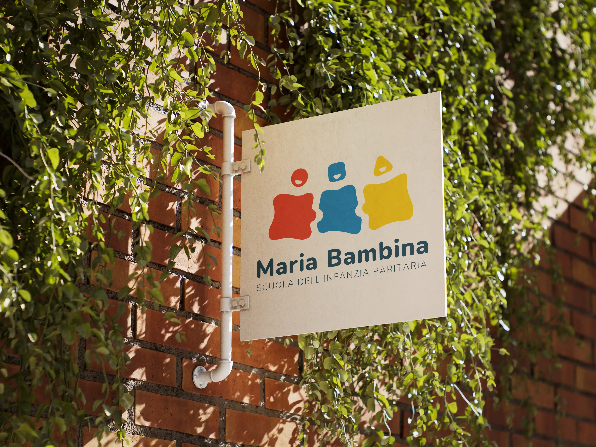
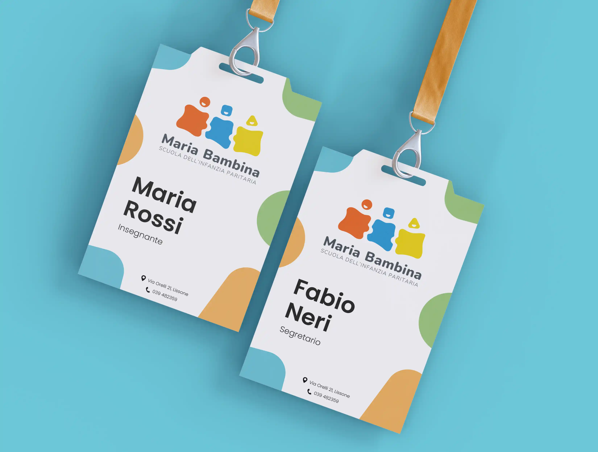
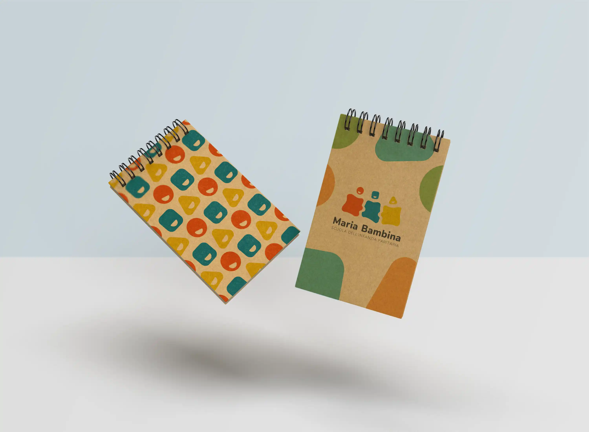
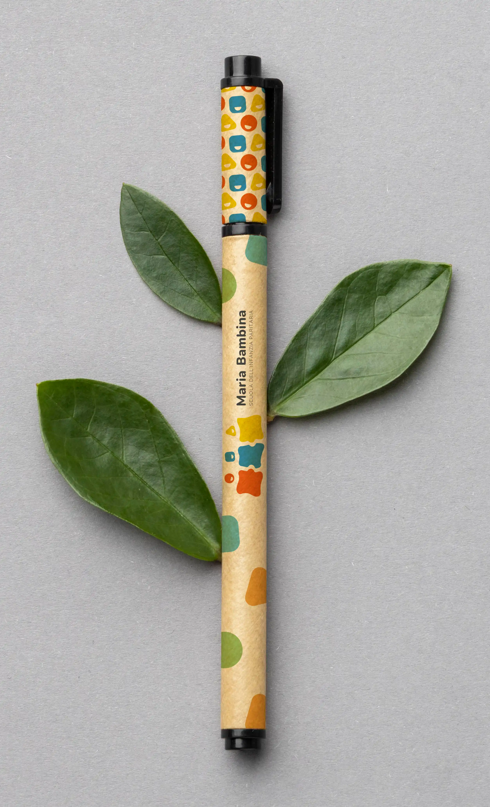
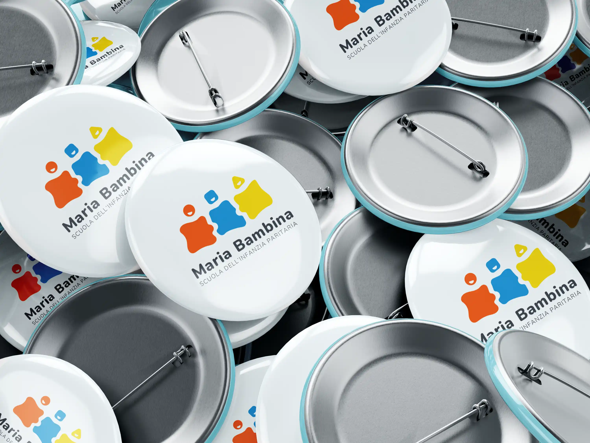
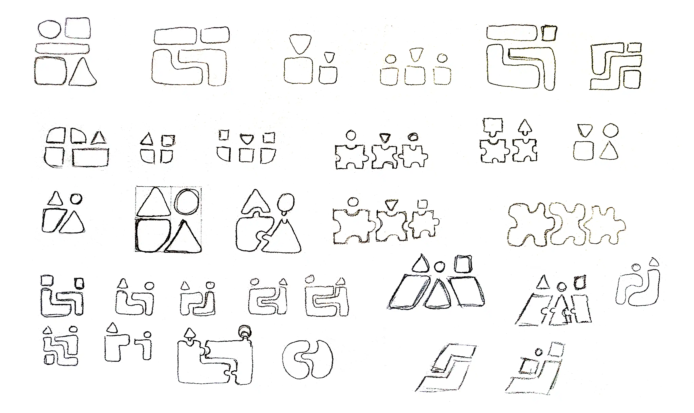

Realizzazione di un logo per la Scuola dell'Infanzia Paritaria Maria Bambina di
Lissone (MB) nell'ambito di un concorso da loro indetto per rinnovare la propria identità visiva
dopo 100 anni di storia. Il logo da me ideato è stato selezionato come vincitore e utilizzato nei
loro canali comunicativi.
Il segno ideato risulta minimale, moderno e adatto ad un contesto infantile mantenendo tuttavia una
nota istituzionale e svariati riferimenti al mondo educativo. Le tre figure rappresentate si
intersecano tra di loro come un puzzle stabilendo le relazioni interpersonali che si creano
nell'ambiente scolastico. I volti sono rappresentati con tre forme diverse per simboleggiare i
diversi giochi usati dai bambini (costruzioni, tangram) ma anche la diversità e l'unicità di ogni
individuo.
Aprile 2024




